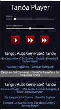
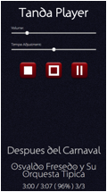

The remote control app is designed to be viewed on a phone or small tablet device.
It shows the current song and allows the DJ to stop it, change the volume or change the speed of playback. During a Cortina the usual Blue stop button is available.
When the music is stopped the screen shows the whole playlist. Tapping any song or Cortina will resume from that position.
This app, if running within a browser window on a laptop for example, can be used with the keyboard too!
· Up – removes the ‘stop at end of song’
· Down – reinstates the ‘stop at the end of the song’
· Left – plays from the start of the current song
· Right – plays from the start of the next song
· Space bar – pause if playing and resume of paused.
The normal operation is through a touch-screen device such as a mobile phone or tablet and here just touching the buttons will operate the device.
Pressing Pause will stop immediately (subject to the fade-out time configured for a pause) but the play button will then resume (again fading up at the rate configured for the pause).
Otherwise the play button will start from the beginning again.
The other stop controls always slowly fade out or let the song end naturally.
Note that there the pause fade-out or fade-in rate is configured in the setup page but is the same value for both fading out and in again and is the same rate used for the Bluetooth pause button.